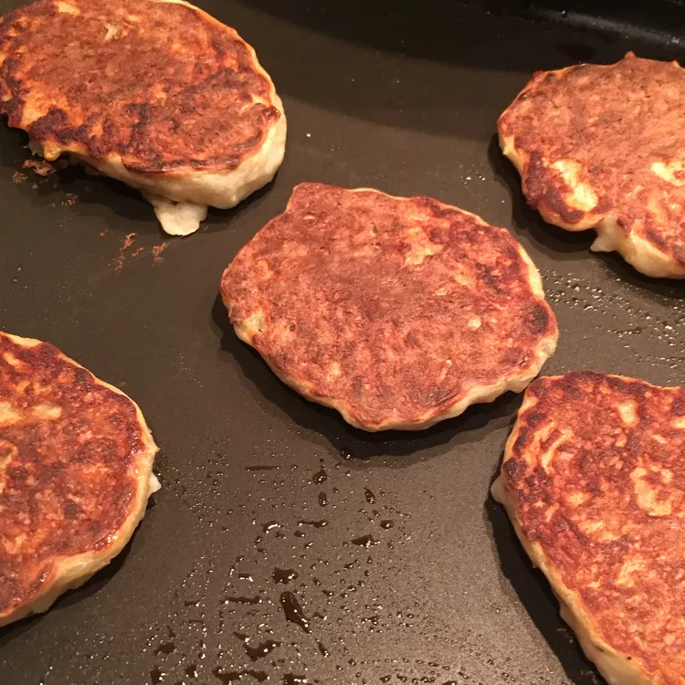

HOME
Boxty

Description
Irish potato griddle cakes, made from both baked potato and raw, grated potato, are pan fried until crisp and golden. Serve them with butter or honey.
Ingredients
- ½ pound potatoes, unpeeled
- 1 ½ cups buttermilk
- ½ pound potatoes, peeled and grated
- 1 ¾ cups all-purpose flour
- 1 teaspoon baking soda
- salt and ground black pepper to taste
- 2 tablespoons butter, or as needed
Directions
- Preheat oven to 450 degrees F (230 degrees C). Scrub the unpeeled potatoes and prick them several times with a fork; place onto a baking sheet.
- Bake in the preheated oven until the potatoes are easily pierced with a fork, 50 minutes to 1 hour. Remove, cool, and peel. Mash the potatoes with the buttermilk. Stir in the grated raw potato, flour, baking soda, salt, and pepper.
- Melt the butter in a large skillet or griddle over medium heat. Scoop the potato mixture into the skillet to make 3 inch cakes. Fry until golden and crisp, turning once, about 5 minutes per side.